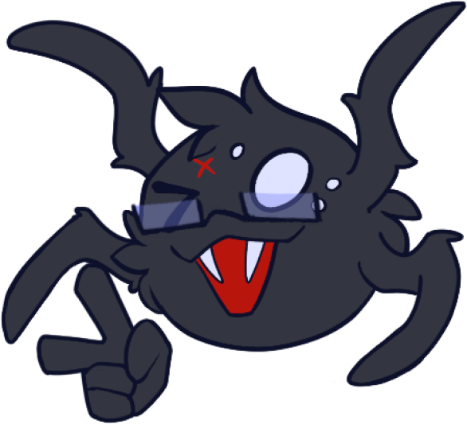

<!DOCTYPE html>
<html lang="ru">
<head>
<meta charset="utf-8">
<meta name="viewport" content="width=device-width, initial-scale=1, viewport-fit=cover">
<meta name="theme-color" content="#000000">
<title>Bebber</title>
<link rel="icon" href="img/icons/booruhub.png">
<link rel="preconnect" href="https://fonts.googleapis.com">
<link rel="preconnect" href="https://fonts.gstatic.com" crossorigin>
<link rel="stylesheet" href="https://fonts.googleapis.com/css2?family=Open+Sans:wght@300;400;600&display=swap">
<style>
/* ===== Шрифты: Segoe WP / Segoe UI с устройства, иначе Open Sans (Google Fonts) ===== */
@font-face{font-family:"WP";font-weight:300;src:local("Segoe WP Light"),local("SegoeWP-Light"),local("Segoe UI Light"),local("SegoeUI-Light")}
@font-face{font-family:"WP";font-weight:400;src:local("Segoe WP"),local("SegoeWP"),local("Segoe UI"),local("SegoeUI")}
@font-face{font-family:"WP";font-weight:600;src:local("Segoe WP Semibold"),local("SegoeWP-Semibold"),local("Segoe UI Semibold"),local("SegoeUI-Semibold")}

:root{
  --accent:#1BA1E2;
  --cols:8;
  --gap:6px;
  --w:min(calc(100vw - 32px),1040px);
  --cell:calc((var(--w) - (var(--cols) - 1) * var(--gap)) / var(--cols));
  --ease:cubic-bezier(.1,.9,.2,1);
}
/* обои рабочего стола: плитки цвета темы становятся «окнами» в картинку */
/* обои: одна картинка на всю сетку плиток; у каждой плитки свой кусок (позиция считается в JS).
   Переворачивающаяся плитка поворачивается вместе со своим куском; у плиток, где что-то выезжает
   внутри (часы, «обо мне»), обои стоят на месте — двигается только содержимое */
html.has-wall .face:not(.pic),html.has-wall .tile.peek .tile-body{background-image:linear-gradient(rgba(0,0,0,var(--wall-dim,.15)),rgba(0,0,0,var(--wall-dim,.15))),var(--wall);   /* обои на 15 % темнее: --wall-dim */
  background-repeat:no-repeat;
  background-size:var(--wsz,cover);background-position:var(--wx,0) var(--wy,0)}
@media (max-width:640px){:root{--cols:4;--gap:5px;--w:calc(100vw - 20px)}}

*{box-sizing:border-box}
[hidden]{display:none!important}
html{background:#000;scrollbar-width:none}
html::-webkit-scrollbar{display:none}
#sbar{position:fixed;right:3px;top:0;width:4px;background:#fff;opacity:0;z-index:55;pointer-events:none;transition:opacity .4s}
#sbar.on{opacity:.45;transition:opacity .1s}
body.locked #shell{visibility:hidden}
body{margin:0;padding:44px 0 40px;background:#000;color:#fff;
  font-family:"WP","Segoe WP","Segoe UI","Open Sans",Tahoma,sans-serif;
  -webkit-font-smoothing:antialiased;-webkit-tap-highlight-color:transparent;overflow-x:hidden;
  user-select:none;-webkit-user-select:none}
a{color:inherit;text-decoration:none}
a,img{-webkit-user-drag:none;user-drag:none}
button{font:inherit;color:inherit;background:none;border:0;padding:0;cursor:pointer;text-align:left}
#shell{width:var(--w);margin:0 auto;position:relative}
#page,#start,#apps{touch-action:pan-y}

/* ===== Строка состояния ===== */
#status{position:fixed;top:0;left:0;right:0;height:28px;background:#000;z-index:50;display:flex;
  justify-content:space-between;align-items:center;padding:0 14px;font-size:13px}
#status .grp{display:flex;gap:9px;align-items:center}
.sig{display:flex;align-items:flex-end;gap:2px;height:12px}
.sig i{display:block;width:3px;background:#fff}
.bat{width:22px;height:11px;border:1.5px solid #fff;position:relative;padding:1.5px}
.bat::after{content:"";position:absolute;right:-4px;top:2.5px;width:2px;height:4px;background:#fff}
.bat i{display:block;height:100%;width:100%;background:#fff}
.bat.low i{background:#E51400}
#batPct{font-size:12px}
.bolt{width:9px;height:12px;fill:#fff;display:none}
#batWrap.charging .bolt{display:block}

/* ===== Плитки ===== */
#tiles{position:relative}
.grid{display:grid;grid-template-columns:repeat(var(--cols),var(--cell));grid-auto-rows:var(--cell);
  gap:var(--gap);grid-auto-flow:dense}
.tile{position:relative;display:block;cursor:pointer;outline:none}
.tile.s{grid-column:span 1;grid-row:span 1}
.tile.m{grid-column:span 2;grid-row:span 2}
.tile.w{grid-column:span 4;grid-row:span 2}
.tile-body{position:absolute;inset:0;overflow:hidden;perspective:900px;transition:transform .12s ease-out}
.tile.flip .tile-body{overflow:visible}
.tile-in{position:absolute;inset:0}
.face{position:absolute;left:0;right:0;top:0;height:100%;background-color:var(--accent);
  display:flex;align-items:center;justify-content:center;overflow:hidden}
.tile.peek .tile-in{bottom:auto;height:200%;transition:transform .9s var(--ease)}
.tile.peek .face{height:50%}
.tile.peek .back{top:50%}
.tile.peek.on .tile-in{transform:translateY(-50%)}
.tile.flip .tile-in{transform-style:preserve-3d;transition:transform .9s var(--ease)}
.tile.flip .face,.tile.flip .face *{backface-visibility:hidden;-webkit-backface-visibility:hidden}
.tile.flip .face{transition:visibility 0s linear .07s}
.tile.flip .back,.tile.flip.on .front{visibility:hidden}
.tile.flip.on .back{visibility:visible}
.tile.flip .back{transform:rotateX(180deg)}
.tile.flip.on .tile-in{transform:rotateX(180deg)}
.face.pic{background-size:cover;background-position:center;background-repeat:no-repeat;background-attachment:scroll}
.face .gl{position:absolute;inset:0;width:100%;height:100%;object-fit:contain;pointer-events:none}
.tile{color:#fff}
.face.pic.glyph{background-size:100%}
.face svg{width:calc(var(--cell) * .72);height:auto;stroke:#fff;fill:none;stroke-width:1.4;stroke-linecap:square}
.label{position:absolute;left:8px;bottom:6px;font-size:14px;line-height:1.1;z-index:2}
.back{flex-direction:column;justify-content:flex-start;align-items:flex-start;padding:10px 12px 28px;text-align:left}
.b-title{font-size:21px;margin-bottom:4px;line-height:1.15}
.b-text{font-size:15px;line-height:1.3;opacity:.92}
.clock{width:100%;height:100%;display:flex;flex-direction:column;justify-content:flex-end;padding:8px 12px 10px}
.c-time{font-size:calc(var(--cell) * .95);font-weight:300;line-height:1;letter-spacing:-2px}
.c-day{font-size:calc(var(--cell) * .38);font-weight:300;line-height:1.1}
.c-date{font-size:calc(var(--cell) * .22)}
/* плитка «обо мне»: аватарка опускается наполовину, до конца и снова поднимается */
.ava-slide{position:absolute;left:0;right:0;top:-100%;height:200%;transition:transform 1.1s var(--ease)}
.ava-name{position:absolute;left:0;right:0;top:0;height:50%}
html.has-wall .tile.peek .face:not(.pic){background:transparent}
.nick{position:absolute;left:10px;bottom:8px;font-size:calc(var(--cell) * .4);font-weight:300;line-height:1.1}
.ava-pic{position:absolute;left:0;right:0;top:50%;height:50%;background:center/cover no-repeat}
.tile.ava .label{text-shadow:0 0 6px #000a}
.tile.ava[data-stage="1"] .ava-slide{transform:translateY(25%)}
.tile.ava[data-stage="2"] .ava-slide{transform:translateY(50%)}
/* плитка «контакты»: сетка соцсетей */
.face.soc{display:grid;align-items:stretch;justify-items:stretch;grid-template-columns:repeat(3,1fr);grid-template-rows:repeat(3,1fr)}
.sc{position:relative;overflow:hidden}
.sc-in{position:absolute;inset:0;background:center/cover no-repeat}
.sc.big{position:absolute;width:calc(200% / 3);height:calc(200% / 3);z-index:1;overflow:visible;display:grid;grid-template-columns:1fr 1fr;grid-template-rows:1fr 1fr;align-items:stretch;justify-items:stretch}
.sc.big .q{position:relative;overflow:hidden}
.sc.big .q .sc-in{background-size:200% 200%}
.tile.social .label{text-shadow:0 0 6px #000c}
/* стрелка «все приложения» */
.more{display:flex;justify-content:flex-end;margin:24px 0 8px}
.more span{display:block;width:46px;height:46px;border:3px solid #fff;border-radius:50%;
  background:url("img/arrow_right.png") 50% 50%/124% no-repeat}

/* ===== Список приложений ===== */
.search{width:100%;height:42px;border:2px solid transparent;background:#ffffffcc;color:#000;font:inherit;
  font-size:17px;padding:0 10px;outline:none;margin:4px 0 6px;border-radius:0;user-select:text}
.search:focus{background:#fff;border-color:var(--accent)}
.letter{width:52px;height:52px;border:2px solid var(--accent);color:var(--accent);font-size:30px;font-weight:300;
  display:flex;align-items:flex-end;padding:0 0 3px 7px;margin:18px 0 8px;line-height:1}
.app-row{display:flex;align-items:center;gap:14px;padding:5px 0;font-size:22px;width:max-content;max-width:100%}
.app-ico{width:52px;height:52px;background:var(--accent);display:flex;align-items:center;justify-content:center;flex:none;overflow:hidden}
.app-ico svg{width:28px;stroke:#fff;fill:none;stroke-width:1.6}
.app-ico img{width:100%;height:100%;object-fit:cover;display:block}
#jump{position:fixed;inset:0;z-index:60;background:#000000d9;overflow-y:auto;scrollbar-width:none;padding:40px 16px}
#jump::-webkit-scrollbar{display:none}
#jump .jl{display:grid;grid-template-columns:repeat(4,1fr);gap:8px;width:min(100%,440px);margin:0 auto}
#jump button{aspect-ratio:1;font-size:clamp(28px,7vw,40px);font-weight:400;display:flex;align-items:flex-end;padding:0 0 4px 9px;
  background:#1f1f1f;color:#fff;line-height:1;backface-visibility:hidden}
#jump button.has{background:var(--accent)}

/* ===== Страница приложения (pivot) ===== */
.app-title{font-size:15px;font-weight:600;letter-spacing:.6px;margin:6px 0 0}
.pivot-heads{white-space:nowrap;overflow:hidden;margin:0 0 10px -10px;padding:0 0 6px 8px}
.ph{font-size:clamp(44px,7vw,68px);font-weight:300;margin-right:26px;color:#ffffff59;line-height:1.25;letter-spacing:-1px}
.ph.on{color:#fff}
.pivot-body{min-height:60vh;position:relative}
.pv-ghost{position:absolute;left:0;top:0;right:0;pointer-events:none}
/* все вкладки начинаются на одной высоте (отступ первого элемента не «проваливается» наружу) */
.pivot-body>:first-child,.pv-ghost>:first-child{margin-top:0}
.li{display:block;padding:8px 0 10px;width:max-content;max-width:100%}
.li-t{font-size:28px;font-weight:300;line-height:1.15;display:block}
.li-s{font-size:15px;color:var(--accent);margin-top:2px;display:block}
.li.pli{display:flex;align-items:center;gap:14px}
.pli .app-ico{width:62px;height:62px}
.about-ico{width:120px;height:120px;margin:4px 0 18px;background:var(--accent);display:flex;align-items:center;justify-content:center;overflow:hidden}
.about-ico img{width:100%;height:100%;object-fit:cover;display:block}
.txt{font-size:19px;line-height:1.45;color:#ddd;max-width:760px;margin:0 0 16px;font-weight:300}
.txt.lead{font-size:27px;color:#fff}
.sub-h{font-size:15px;color:#9a9a9a;margin:18px 0 10px}
.store{display:inline-block;margin:8px 0 6px;min-width:256px;min-height:60px}
.store img{width:256px;max-width:100%;display:block}
.shots{display:grid;grid-template-columns:repeat(auto-fill,minmax(150px,1fr));gap:10px;max-width:980px}
.shot{display:block;aspect-ratio:9/16;background:#1d1d1d;overflow:hidden}
.shot img{width:100%;height:100%;object-fit:cover;display:block}
.colors{display:grid;grid-template-columns:repeat(auto-fill,minmax(64px,1fr));gap:8px;max-width:620px}
.colors button{aspect-ratio:1;border:3px solid transparent}
.colors button.on{border-color:#fff}
.opt{display:block;padding:8px 0 10px}
/* настройки в стиле WP 8.1 */
.li-s.gray{color:#9a9a9a}
.lp{display:block;width:100%;max-width:560px;border:3px solid #fff;text-align:left;padding:6px 10px;font-size:22px;font-weight:400;line-height:1.3}
.lp .sq{display:inline-block;width:18px;height:18px;background:var(--accent);margin-right:10px;vertical-align:-1px}
.lpk{--row:40px;display:block;max-width:560px;border:3px solid #fff;height:calc(var(--row) + 6px);overflow:hidden;cursor:pointer;
  transition:height .16s cubic-bezier(.1,.9,.2,1)}
.lpk-in{transition:transform .16s cubic-bezier(.1,.9,.2,1)}
.lpk-it{height:var(--row);line-height:var(--row);padding:0 10px;font-size:22px;white-space:nowrap}
.lpk.press,.lpk.open{background:#fff;border-color:var(--accent);color:#000}
.lpk.open .lpk-it.on{color:var(--accent)}
html.light .lpk{border-color:#000}
.acc{color:var(--accent)}
.wall-row{display:flex;gap:18px;align-items:flex-start;margin-top:4px}
.wall-prev{width:140px;height:140px;flex:none;background:#1f1f1f center/cover no-repeat}
.wall-row .btn{margin-top:4px;font-weight:600;font-size:18px;padding:6px 14px}
.ulink{display:block;margin-top:26px;font-size:18px;text-decoration:underline}
.spider{width:min(190px,48%);display:block;margin:0 0 14px}
.credits{margin-top:44px;max-width:560px}
.cr-in{opacity:.42}
.wp-logo{width:min(280px,80%);display:block;margin:0 0 14px}
.cr{font-size:13px;line-height:1.55}
/* полноэкранный выбор (цвет элементов, обои) */
#picker{position:fixed;inset:0;z-index:65;background:#000;overflow-y:auto;scrollbar-width:none;padding:40px 0 40px}
#picker::-webkit-scrollbar{display:none}
.pk-in{width:var(--w);margin:0 auto}
.pk-title{font-size:15px;font-weight:600;letter-spacing:.6px;margin:6px 0 0}
.pk-h{font-size:clamp(44px,7vw,68px);font-weight:300;line-height:1.25;margin:0 0 14px -2px;letter-spacing:-1px}
.pk-h:empty{display:none}
.pk-grid{display:grid;grid-template-columns:repeat(4,1fr);gap:10px;max-width:520px;margin-top:18px}
.pk-grid button{aspect-ratio:1;display:block;background:center/cover no-repeat;backface-visibility:hidden;position:relative}
.pk-grid.walls button{border:3px solid var(--accent)}
#picker.chrome{background:#181C18}
.pk-grid.colors2{gap:12px;margin-top:44px}
.pk-grid .plus{background:#1f1f1f;display:flex;align-items:center;justify-content:center}
.pk-grid .plus svg{width:40%;stroke:#fff;fill:none;stroke-width:1.6}
/* ===== светлая тема ===== */
html.light,html.light body{background:#fff;color:#000}
html.light #status{background:#fff;color:#000}
html.light .sig i,html.light .bat i,html.light .bat::after{background:#000}
html.light .bat{border-color:#000}
html.light .bolt{fill:#000}
html.light #sbar{background:#000}
html.light .ph{color:#00000059}
html.light .txt{color:#333}
html.light .txt.lead{color:#000}
html.light .sub-h,html.light .t-l,html.light .li-s.gray{color:#6b6b6b}
html.light .btn,html.light .lp{border-color:#000}
html.light .btn:active{background:#000;color:#fff}
html.light .sw{border-color:#000}
html.light .sw i{background:#000}
html.light .search{background:#e6e6e6}
html.light .more span{filter:invert(1)}
html.light #jump{background:#ffffffe6}
html.light #jump button{background:#dcdcdc;color:#000}
html.light #jump button.has{background:var(--accent);color:#fff}
html.light .shot,html.light .wall-prev,html.light .pk-grid .plus{background-color:#dcdcdc}
html.light .pk-grid .plus svg{stroke:#000}
html.light #picker{background:#fff}
html.light #picker.chrome{background:#DEDEDE}
html.light .wp-logo{filter:invert(1)}
.opt.on .li-t{color:var(--accent)}
.btn{border:2px solid #fff;padding:6px 20px;font-size:16px;margin-top:10px}
.btn:active{background:#fff;color:#000}
.toggle{display:block;margin:26px 0 0;cursor:pointer;width:max-content}
.t-l{display:block;font-size:15px;color:#9a9a9a;margin-bottom:6px}
.t-r{display:flex;align-items:center;gap:14px}
.toggle input{position:absolute;opacity:0;pointer-events:none}
.sw{width:56px;height:24px;border:2px solid #fff;position:relative;display:block;touch-action:none}
.sw b{position:absolute;left:3px;top:3px;bottom:3px;width:0;background:var(--accent);transition:width .2s}
.sw i{position:absolute;top:-4px;left:-2px;width:12px;height:28px;background:#fff;transition:left .2s}
.toggle input:checked+.sw b{width:calc(100% - 6px)}
.toggle input:checked+.sw i{left:42px}
.sw.drag b,.sw.drag i{transition:none}
.t-s{font-size:20px;font-weight:300}

/* ===== Просмотр скриншотов ===== */
#viewer{position:fixed;inset:0;z-index:70;background:#000;display:flex;align-items:center;justify-content:center;cursor:pointer;touch-action:none}
#viewer img{max-width:calc(100vw - 24px);max-height:calc(100vh - 70px);display:block}
#viewer .v-cnt{position:absolute;bottom:14px;left:0;right:0;text-align:center;font-size:15px;color:#9a9a9a}

/* ===== Экран блокировки ===== */
#lock{position:fixed;inset:0;z-index:100;background:#000 center/cover no-repeat;
  touch-action:none;cursor:grab}
.l-clock{position:absolute;left:24px;bottom:44px;text-align:left}
.l-time{font-size:clamp(90px,14vw,150px);font-weight:300;line-height:1;letter-spacing:-3px}
.l-date{font-size:clamp(30px,4vw,44px);font-weight:300;line-height:1.15;margin-top:6px;white-space:pre-line}
#lock::before{content:"";position:absolute;inset:0;pointer-events:none;
  background:linear-gradient(to bottom,#0000 55%,rgba(0,0,0,var(--vignette,.15)))}   /* виньетка: --vignette */
.l-hint{position:absolute;bottom:14px;left:0;right:0;text-align:center;font-size:13px;opacity:.55}

@media (prefers-reduced-motion:reduce){.tile-in,.tile-body,.ava-slide{transition:none!important}}
</style>
</head>
<body>

<div id="lock" hidden>
  <div class="l-clock"><div class="l-time"></div><div class="l-date"></div></div>
  <div class="l-hint"></div>
</div>

<div id="status">
  <div class="grp"><span class="sig"><i style="height:4px"></i><i style="height:6px"></i><i style="height:8px"></i><i style="height:10px"></i><i style="height:12px"></i></span></div>
  <div class="grp">
    <span class="grp" id="batWrap" hidden><span id="batPct"></span><svg class="bolt" viewBox="0 0 9 12"><path d="M6 0L0 7h3.5L2.5 12 9 4.5H5.5z"/></svg><span class="bat"><i></i></span></span>
    <span id="sTime"></span>
  </div>
</div>

<div id="shell">
  <section id="start" hidden>
    <div class="grid" id="tiles"></div>
    <a class="more" href="#/apps" draggable="false"><span class="tilt"></span></a>
  </section>

  <section id="apps" hidden>
    <input class="search ts" id="search" type="search" autocomplete="off">
    <div id="appList"></div>
  </section>

  <section id="page" hidden></section>
</div>

<div id="sbar"></div>
<div id="jump" hidden><div class="jl"></div></div>
<div id="picker" hidden><div class="pk-in"><div class="pk-title"></div><div class="pk-h"></div><div class="pk-grid"></div></div></div>
<input type="file" id="wallFile" accept="image/*" hidden>
<div id="viewer" hidden><div class="v-cnt"></div></div>

<script>
(() => {
'use strict';

/* ================= НАСТРОЙКИ — меняйте здесь ================= */
const CONFIG = {
  name: 'Bebber',
  avatar: 'img/avatar.jpg',
  accent: '#1BA1E2',          // цвет по умолчанию
  lockScreen: true,           // показывать экран блокировки при входе
  email: ''                   // например 'bebber@mail.ru' — пусто = не показывать
};
/* Соцсети: иконка — img/social/<id>.png. Крутятся на плитке «контакты» и перечислены на её странице */
const SOCIAL = [
  { id: 'reddit',   name: 'Reddit',   url: 'https://www.reddit.com/user/IVANOV2004/' },
  { id: 'github',   name: 'GitHub',   url: 'https://github.com/Bebber228' },
  { id: 'x',        name: 'X',        url: 'https://x.com/IVANOV228007' },
  { id: 'telegram', name: 'Telegram', url: 'https://t.me/bebber007' },
  { id: 'tumblr',   name: 'Tumblr',   url: 'https://tumblr.com/ivanov23' },
  { id: 'openvk',   name: 'OpenVK',   url: 'https://openvk.org/bebber' }
];
const socIcon = id => `img/social/${id}.png`;
/* обои экрана блокировки (img/lock) — при каждом открытии сайта выбираются случайно */
const WALLPAPERS = [
  'BabcockSP.jpg', 'ChattoogaRiver.jpg', 'DiwaliLamps.jpg', 'DolbadarnWales.jpg',
  'ForestofDean.jpg', 'GilaCliff.jpg', 'KnowledgeSculpture.jpg', 'NaejangsanNP.jpg',
  'NorthWindow.jpg', 'PipiwaiTrail.jpg', 'TrianaSpain.jpg', 'VietnamBridge.jpg',
  'WhiteHouse.jpg'
];
const STORE_BTN = 'https://edge.live.net.co/images/store/2025_GetButton_Black.png';
new Image().src = STORE_BTN;   // заранее, чтобы кнопка не «выскакивала» после анимации

/* Проекты. icon — иконка из img/icons; glyph: true — белая иконка на цвете темы;
   store — ссылка в Live Store; shots — сколько скриншотов в img/screens/<id>/01.jpg, 02.jpg… */
const PROJECTS = [
  { id: 'booruhub', name: 'BooruHub', icon: 'img/icons/booruhub.png', shots: 7,
    store: 'https://store.live.net.co/app/946', storeName: 'BooruHub',
    sub: { ru: 'клиент booru-галерей · Windows Phone 8', en: 'booru gallery client · Windows Phone 8' },
    about: { ru: 'Моё собственное приложение для Windows Phone 8 — клиент для booru-галерей артов: поиск по тегам, избранное, чёрный список тегов и несколько источников. Сделано в Visual Studio 2013 с Windows Phone SDK 8, развитие продолжается.',
             en: 'My own Windows Phone 8 app — a client for booru art galleries: tag search, favourites, tag blacklist and multiple sources. Built in Visual Studio 2013 with the Windows Phone SDK 8, still in development.' } },
  { id: 'msnmoney', name: 'MSN Money Stocks', icon: 'img/icons/msnmoney.png', shots: 7,
    store: 'https://store.live.net.co/app/968', storeName: 'MSN Money Stocks (Revival)',
    sub: { ru: 'порт с WP7 на Windows Phone 8.1', en: 'port from WP7 to Windows Phone 8.1' },
    about: { ru: 'Старое приложение MSN Money Stocks для Windows Phone 7 (версия 1.8), возрождённое и перенесённое на Windows Phone 8.1: снова работают котировки, графики, новости и видео.',
             en: 'The classic MSN Money Stocks app for Windows Phone 7 (version 1.8), revived and ported to Windows Phone 8.1: quotes, charts, news and videos work again.' } },
  { id: 'treasureclicker', name: 'Treasure Clicker', icon: 'img/icons/treasureclicker.png', glyph: true, shots: 5,
    store: 'https://store.live.net.co/app/971', storeName: 'Treasure Clicker',
    sub: { ru: 'кликер на Nokia Treasure Tag', en: 'a clicker for the Nokia Treasure Tag' },
    about: { ru: 'Treasure Clicker превращает метку Nokia Treasure Tag в кликер: нажатие кнопки на метке выполняет действие на телефоне.',
             en: 'Treasure Clicker turns your Nokia Treasure Tag into a clicker: pressing the button on the tag triggers an action on the phone.' } },
  { id: 'wpmirror', name: 'WpMirror', icon: 'img/icons/wpmirror.png', glyph: true, shots: 0,
    sub: { ru: 'зеркало экрана телефона на ПК по USB', en: 'phone screen mirroring to a PC over USB' },
    about: { ru: 'WpMirror выводит экран телефона на Windows Phone на компьютер по USB-кабелю.',
             en: 'WpMirror shows the screen of a Windows Phone on your computer over a USB cable.' } }
];

const ACCENTS = [
  [['лайм','lime'],'#A4C400'],[['зелёный','green'],'#60A917'],[['изумрудный','emerald'],'#008A00'],[['бирюзовый','teal'],'#00ABA9'],
  [['голубой','cyan'],'#1BA1E2'],[['кобальт','cobalt'],'#0050EF'],[['индиго','indigo'],'#6A00FF'],[['фиолетовый','violet'],'#AA00FF'],
  [['розовый','pink'],'#F472D0'],[['пурпурный','magenta'],'#D80073'],[['малиновый','crimson'],'#A20025'],[['красный','red'],'#E51400'],
  [['оранжевый','orange'],'#FA6800'],[['янтарный','amber'],'#F0A30A'],[['жёлтый','yellow'],'#E3C800'],[['коричневый','brown'],'#825A2C'],
  [['оливковый','olive'],'#6D8764'],[['стальной','steel'],'#647687'],[['лиловый','mauve'],'#76608A'],[['серо-коричневый','taupe'],'#87794E'],
  [['мятный','mint'],'#29DF5A']
];

/* ================= Тексты на двух языках ================= */
const STR = {
  ru: {
    about: 'обо мне', devices: 'устройства', contacts: 'контакты', projects: 'проекты', settings: 'настройки',
    aboutApp: 'о приложении', screenshots: 'скриншоты', theme: 'тема', language: 'язык', site: 'о сайте',
    accent: 'цвет элементов', lockToggle: 'экран блокировки при входе', on: 'вкл.', off: 'выкл.',
    reset: 'сбросить настройки', search: 'поиск приложений', lockHint: 'потяните вверх, чтобы разблокировать',
    allApps: 'все приложения', writeMe: 'напишите мне', tagline: 'разработчик приложений для Windows Phone',
    langAuto: 'как в системе', system: 'сейчас', langHint: 'язык интерфейса сайта', mail: 'почта',
    hi: n => `Привет! Я ${n}.`,
    aboutText: 'Разрабатываю приложения для Windows Phone: возвращаю к жизни старые программы с WP7, переношу их на Windows Phone 8.1 и делаю свои — в том самом стиле Metro.',
    aboutSite: 'Этот сайт устроен как Windows Phone 8.1: живые плитки, анимация «турникет» при переходах, панорама рабочего стола, наклон плиток при нажатии и смена цвета элементов.',
    dev1: 'основной тестовый телефон', dev2: 'второй телефон для проверки',
    sysPivot: 'система', appsPivot: 'приложения', themeItem: 'рабочий стол+тема', lockItem: 'экран блокировки',
    langItem: 'язык', infoItem: 'сведения о сайте', infoSub: 'стиль, авторы, версия',
    themeIntro: 'Измените фон сайта и <span class="acc">цвет элементов</span> по вашему вкусу.',
    bgH: 'Фон', dark: 'темный', light: 'светлый', accentH: 'Цвет элементов', accentPick: 'ЦВЕТА',
    wallH: 'Фон рабочего стола', pick: 'выбрать фото', remove: 'удалить', pickTitle: 'ВЫБЕРИТЕ ФОТО', walls: 'обои',
    info1: 'Сайт вдохновлён стилем Metro и интерфейсом Windows Phone.',
    info2: 'Живые плитки, «турникет», панорама рабочего стола и экран блокировки сделаны по мотивам Windows Phone 8.1.',
    tm1: 'Microsoft, Windows, Windows Phone и логотип Windows являются товарными знаками или зарегистрированными товарными знаками корпорации Майкрософт в США и (или) других странах.',
    tm2: 'Все прочие товарные знаки являются собственностью соответствующих владельцев.',
    tm3: 'Сайт не является продуктом корпорации Майкрософт и не одобрен ею.',
    noShots: 'скриншотов пока нет'
  },
  en: {
    about: 'about me', devices: 'devices', contacts: 'contacts', projects: 'projects', settings: 'settings',
    aboutApp: 'about', screenshots: 'screenshots', theme: 'theme', language: 'language', site: 'about site',
    accent: 'accent colour', lockToggle: 'lock screen on start', on: 'on', off: 'off',
    reset: 'reset settings', search: 'search apps', lockHint: 'swipe up to unlock',
    allApps: 'all apps', writeMe: 'get in touch', tagline: 'Windows Phone app developer',
    langAuto: 'system default', system: 'now', langHint: 'site interface language', mail: 'email',
    hi: n => `Hi! I'm ${n}.`,
    aboutText: 'I build apps for Windows Phone: I bring old WP7 apps back to life, port them to Windows Phone 8.1 and make my own — in that very Metro style.',
    aboutSite: 'This site works like Windows Phone 8.1: live tiles, turnstile page transitions, a panning start screen, tile tilt on press and accent colours.',
    dev1: 'main test phone', dev2: 'second phone for testing',
    sysPivot: 'system', appsPivot: 'applications', themeItem: 'start+theme', lockItem: 'lock screen',
    langItem: 'language', infoItem: 'about this site', infoSub: 'style, credits, version',
    themeIntro: 'Change the site background and <span class="acc">accent colour</span> to suit your mood.',
    bgH: 'Background', dark: 'dark', light: 'light', accentH: 'Accent colour', accentPick: 'ACCENTS',
    wallH: 'Start background', pick: 'choose photo', remove: 'remove', pickTitle: 'CHOOSE A PHOTO', walls: 'wallpapers',
    info1: 'This site is inspired by the Metro design language and the Windows Phone interface.',
    info2: 'Live tiles, turnstile transitions, the panning start screen and the lock screen are modelled on Windows Phone 8.1.',
    tm1: 'Microsoft, Windows, Windows Phone and the Windows logo are trademarks or registered trademarks of Microsoft Corporation in the United States and/or other countries.',
    tm2: 'All other trademarks are the property of their respective owners.',
    tm3: 'This site is not a Microsoft product and is not endorsed by Microsoft Corporation.',
    noShots: 'no screenshots yet'
  }
};

/* ================= Утилиты ================= */
const $ = (s, r = document) => r.querySelector(s);
const $$ = (s, r = document) => [...r.querySelectorAll(s)];
const store = {
  get(k, d) { try { const v = localStorage.getItem('wp_' + k); return v === null ? d : JSON.parse(v); } catch (e) { return d; } },
  set(k, v) { try { localStorage.setItem('wp_' + k, JSON.stringify(v)); } catch (e) {} },
  clear() { try { Object.keys(localStorage).filter(k => k.startsWith('wp_')).forEach(k => localStorage.removeItem(k)); } catch (e) {} }
};
const REDUCED = matchMedia('(prefers-reduced-motion: reduce)').matches;
const dur = ms => REDUCED ? 1 : ms;
const EASE_OUT = 'cubic-bezier(.1,.9,.2,1)';
const EASE_IN = 'cubic-bezier(.7,0,1,.5)';
const pad = n => String(n).padStart(2, '0');
const isExt = h => /^(https?:|mailto:)/.test(h);

/* язык: «как в системе» — русский, если браузер на русском, иначе английский */
const SYS_LANG = ((navigator.languages && navigator.languages[0]) || navigator.language || 'en').toLowerCase().startsWith('ru') ? 'ru' : 'en';
let langPref = store.get('lang', 'auto');
const L = () => langPref === 'auto' ? SYS_LANG : langPref;
const t = k => STR[L()][k];
const tr = o => o && typeof o === 'object' ? o[L()] : o;

const getAccent = () => store.get('accent', CONFIG.accent);
function setAccent(c) { document.documentElement.style.setProperty('--accent', c); store.set('accent', c); }
setAccent(getAccent());
const accentName = () => { const a = ACCENTS.find(x => x[1].toLowerCase() === getAccent().toLowerCase()); return a ? a[0][L() === 'ru' ? 0 : 1] : getAccent(); };
// фон: тёмный / светлый
const getTheme = () => store.get('theme', 'dark');
function applyTheme() {
  const light = getTheme() === 'light';
  document.documentElement.classList.toggle('light', light);
  const m = document.querySelector('meta[name=theme-color]'); if (m) m.content = light ? '#ffffff' : '#000000';
}
function setTheme(v) { store.set('theme', v); applyTheme(); }
applyTheme();
// обои рабочего стола (путь к картинке или data:URL своей фотографии)
const getWall = () => store.get('wall', '');
function applyWall() {
  const w = getWall(), de = document.documentElement;
  de.classList.toggle('has-wall', !!w);
  if (w) de.style.setProperty('--wall', `url("${w}")`); else de.style.removeProperty('--wall');
}
function setWall(w) { if (w) store.set('wall', w); else { try { localStorage.removeItem('wp_wall'); } catch (e) {} } applyWall(); layoutWall(); }
applyWall();

/* ================= Иконки ================= */
const I = {
  person: '<circle cx="12" cy="8" r="4"/><path d="M4 21c0-4.4 3.6-8 8-8s8 3.6 8 8"/>',
  mail:   '<rect x="3" y="5" width="18" height="14"/><path d="M3 5l9 8 9-8"/>',
  code:   '<path d="M8 6l-6 6 6 6M16 6l6 6-6 6"/>'
};
const svg = n => `<svg viewBox="0 0 24 24" aria-hidden="true">${I[n] || ''}</svg>`;
const ico = a => a.img ? `` : svg(a.icon);

/* ================= Разметка ================= */
const link = (href, inner, cls) => href && href !== '#'
  ? `<a class="${cls}" href="${href}" draggable="false"${isExt(href) ? ' target="_blank" rel="noopener"' : ''}>${inner}</a>`
  : `<div class="${cls}">${inner}</div>`;
const li = (tt, s, href) => link(href, `<span class="li-t">${tt}</span>${s ? `<span class="li-s">${s}</span>` : ''}`,
  'li ts' + (href && href !== '#' ? ' tilt' : ''));
const pli = x => link('#/app/' + x.id,
  `<span class="app-ico">${ico({ img: x.icon, glyph: x.glyph })}</span><span><span class="li-t">${x.name}</span><span class="li-s">${tr(x.sub)}</span></span>`,
  'li pli ts tilt');
const p = (tt, cls = '') => `<p class="txt ${cls} ts">${tt}</p>`;
const short = u => u.replace(/^(https?:\/\/|mailto:)/, '');
const toggle = (id, label, on) => `<div class="toggle ts"><span class="t-l">${label}</span><span class="t-r">
  <input type="checkbox" id="tg-${id}"${on ? ' checked' : ''}><span class="sw"><b></b><i></i></span><span class="t-s">${on ? t('on') : t('off')}</span></span></div>`;
/* Список-выбор (ListPicker) WP 8.1 — по видео, пересчитано с замедления 33 %:
   нажатие — рамка цвета темы, белый фон; через ~0,07 с поле раскрывается вниз за ~0,16 с,
   текущий пункт подсвечен цветом темы; выбор — сразу снова тёмное поле, и за ~0,18 с
   оно сворачивается к выбранному пункту. */
const lpkHTML = (id, items, sel) => `<div class="lpk ts" id="${id}" data-sel="${sel}"><div class="lpk-in" style="transform:translateY(${-sel * 40}px)">` +
  items.map((it, k) => `<div class="lpk-it${k === sel ? ' on' : ''}" data-k="${k}">${it}</div>`).join('') + `</div></div>`;
function listPicker(el, onPick) {
  const inner = el.firstElementChild, n = inner.children.length, R = 40;
  let open = false, busy = false;
  el.addEventListener('pointerdown', () => { if (!open && !busy) el.classList.add('press'); });
  el.addEventListener('pointerleave', () => { if (!open) el.classList.remove('press'); });
  el.addEventListener('pointercancel', () => { if (!open) el.classList.remove('press'); });
  el.addEventListener('click', e => {
    if (busy) return;
    if (!open) {
      open = busy = true; el.classList.add('press', 'open');
      setTimeout(() => {
        el.style.transitionDuration = inner.style.transitionDuration = dur(160) + 'ms';
        el.style.height = (n * R + 6) + 'px'; inner.style.transform = 'none';
        setTimeout(() => { busy = false; }, dur(170));
      }, dur(70));
      return;
    }
    const it = e.target.closest('.lpk-it'); if (!it) return;
    const k = +it.dataset.k, prev = +el.dataset.sel;
    busy = true; open = false;
    el.classList.remove('press', 'open');
    $$('.lpk-it', el).forEach((x, j) => x.classList.toggle('on', j === k));
    el.dataset.sel = k;
    setTimeout(() => {
      el.style.transitionDuration = inner.style.transitionDuration = dur(180) + 'ms';
      el.style.height = ''; inner.style.transform = `translateY(${-k * R}px)`;
      setTimeout(() => { busy = false; if (k !== prev) onPick(k); }, dur(190));
    }, dur(30));
  });
}
// пункт настроек: крупное название + серая подпись
const si = (tt, sub, href) => link(href, `<span class="li-t">${tt}</span>${sub ? `<span class="li-s gray">${sub}</span>` : ''}`, 'li ts tilt');
const storeBtn = x => x.store ? `<a class="store ts tilt" href="${x.store}" target="_blank" rel="noopener" draggable="false"></a>` : '';
const shotSrc = (id, k) => `img/screens/${id}/${pad(k + 1)}.jpg`;

/* ================= Приложения ================= */
const APPS = {
  about: { title: () => t('about'), img: CONFIG.avatar, pivots: [
    { h: () => t('about'), render: () => p(STR[L()].hi(CONFIG.name), 'lead') +
      `` + p(t('aboutText')) + p(t('aboutSite')) },
    { h: () => t('devices'), render: () => li('Lumia 830', t('dev1')) + li('Windows Phone 8.1', t('dev2')) }
  ]},
  projects: { title: () => t('projects'), icon: 'code', pivots: [
    { h: () => t('projects'), render: () => PROJECTS.map(pli).join('') }
  ]},
  contact: { title: () => t('contacts'), img: 'img/icons/contacts.png', glyph: true, pivots: [
    { h: () => t('contacts'), render: () => (CONFIG.email ? li(t('mail'), CONFIG.email, 'mailto:' + CONFIG.email) : '') +
      SOCIAL.map(x => link(x.url, `<span class="app-ico"></span><span><span class="li-t">${x.name}</span><span class="li-s">${short(x.url).replace(/\/$/, '')}</span></span>`, 'li pli ts tilt')).join('') }
  ]},
  settings: { title: () => t('settings'), img: 'img/icons/settings.png', glyph: true, pivots: [
    { h: () => t('sysPivot'), render: () =>
      si(t('themeItem'), accentName() + (getWall() ? ' · ' + t('walls') : ''), '#/app/theme') +
      si(t('lockItem'), store.get('lock', CONFIG.lockScreen) ? t('on') : t('off'), '#/app/lockset') +
      si(t('langItem'), langPref === 'auto' ? t('langAuto') : langPref === 'ru' ? 'русский' : 'English', '#/app/lang') +
      si(t('infoItem'), t('infoSub'), '#/app/info') },
    { h: () => t('appsPivot'), render: () =>
      [['about', t('about'), CONFIG.name], ['contact', t('contacts'), SOCIAL.map(x => x.name).join(', ')], ['projects', t('projects'), PROJECTS.length + '']]
        .map(([id, n, sub]) => si(n, sub, '#/app/' + id)).join('') + PROJECTS.map(x => si(x.name, tr(x.sub), '#/app/' + x.id)).join('') }
  ]},
  // страницы настроек — открываются из «настроек», в списке приложений их нет
  theme: { hidden: true, head: () => t('settings'), title: () => t('themeItem'), pivots: [
    { h: () => t('themeItem'), render: () => {
        const w = getWall();
        return p(t('themeIntro')) +
          `<div class="sub-h ts">${t('bgH')}</div>` + lpkHTML('lp-bg', ['light', 'dark'].map(v => t(v)), getTheme() === 'light' ? 0 : 1) +
          `<div class="sub-h ts">${t('accentH')}</div><button class="lp ts tilt" id="lp-acc"><span class="sq"></span>${accentName()}</button>` +
          `<div class="sub-h ts" style="margin-top:34px">${t('wallH')}</div><div class="wall-row ts">
             <div class="wall-prev"${w ? ` style="background-image:url('${w}')"` : ''}></div>
             <div><button class="btn tilt" id="wall-pick">${t('pick')}</button>${w ? `<button class="ulink" id="wall-del">${t('remove')}</button>` : ''}</div></div>`;
      },
      mount: b => {
        const rerender = () => showPivot(0, 0);
        // «Фон»: короткий список раскрывается на месте, как в WP
        listPicker($('#lp-bg', b), k => setTheme(k === 0 ? 'light' : 'dark'));
        $('#lp-acc', b).onclick = () => openPicker({ title: t('accentPick'), cls: 'colors2', chrome: true,
          items: ACCENTS.map(([n, c]) => ({ style: `background:${c}`, on: c.toLowerCase() === getAccent().toLowerCase(), title: n[L() === 'ru' ? 0 : 1], v: c })),
          pick: v => { setAccent(v); rerender(); } });
        $('#wall-pick', b).onclick = () => openPicker({ title: t('pickTitle'), head: t('walls'), cls: 'walls', plus: true,
          items: WALLPAPERS.map(w => ({ style: `background-image:url('img/lock/${w}')`, v: `img/lock/${w}` })),
          pick: v => { if (v === '+') { $('#wallFile').click(); return; } setWall(v); rerender(); } });
        const del = $('#wall-del', b); if (del) del.onclick = () => { setWall(''); rerender(); };
      } }
  ]},
  lockset: { hidden: true, head: () => t('settings'), title: () => t('lockItem'), pivots: [
    { h: () => t('lockItem'), render: () => toggle('lock', t('lockToggle'), store.get('lock', CONFIG.lockScreen)),
      mount: b => { const tg = $('#tg-lock', b); tg.onchange = () => store.set('lock', tg.checked); } }
  ]},
  lang: { hidden: true, head: () => t('settings'), title: () => t('langItem'), pivots: [
    { h: () => t('langItem'), render: () =>
      `<div class="sub-h ts">${t('langHint')}</div>` +
      [['auto', t('langAuto'), `${t('system')}: ${SYS_LANG === 'ru' ? 'русский' : 'English'}`], ['ru', 'русский'], ['en', 'English']]
        .map(([k, n, s]) => `<button class="opt ts tilt${langPref === k ? ' on' : ''}" data-l="${k}"><span class="li-t">${n}</span>${s ? `<span class="li-s">${s}</span>` : ''}</button>`).join(''),
      mount: b => $$('.opt', b).forEach(o => o.onclick = () => setLang(o.dataset.l)) }
  ]},
  info: { hidden: true, head: () => t('settings'), title: () => t('infoItem'), pivots: [
    { h: () => t('infoItem'), render: () => p(t('info1'), 'lead') + p(t('info2')) +
      `<button class="btn ts tilt" id="reset">${t('reset')}</button>` +
      `<div class="credits ts"><div class="cr-in">
        <div class="cr">${t('tm1')}<br>${t('tm2')}<br>${t('tm3')}</div></div></div>`,
      mount: b => { $('#reset', b).onclick = () => { store.clear(); setAccent(CONFIG.accent); applyTheme(); applyWall(); langPref = 'auto'; applyLang(); }; } }
  ]}
};
// страница для каждого проекта: описание + кнопка Live Store, скриншоты
PROJECTS.forEach(x => {
  const pivots = [{ h: () => t('aboutApp'), render: () =>
    `<div class="about-ico ts">${ico({ img: x.icon, glyph: x.glyph })}</div>` + p(x.name, 'lead') + p(tr(x.about)) + storeBtn(x) }];
  if (x.shots) pivots.push({ h: () => t('screenshots'),
    render: () => `<div class="shots ts">${[...Array(x.shots)].map((_, k) =>
      `<button class="shot tilt" data-k="${k}"></button>`).join('')}</div>`,
    mount: b => $$('.shot', b).forEach(s => s.onclick = () => openViewer(x, +s.dataset.k)) });
  APPS[x.id] = { title: () => x.name, img: x.icon, glyph: x.glyph, pivots };
});

/* ================= Рабочий стол ================= */
const TILES = () => [
  { size: 'w', type: 'clock', live: 'peek' },
  { size: 'm', to: '#/app/about', type: 'avatar' },
  { size: 'm', to: '#/app/contact', label: t('contacts'), type: 'social' },
  { size: 'w', to: '#/app/projects', label: t('projects'), icon: 'code', live: 'flip', feed: true },
  ...PROJECTS.map(x => ({ size: 'm', to: '#/app/' + x.id, label: x.name, img: x.icon, glyph: x.glyph, live: 'flip',
    back: `<div class="b-title">${x.name}</div><div class="b-text">${tr(x.sub)}</div>` })),
  { size: 'm', to: '#/app/settings', label: t('settings'), img: 'img/icons/settings.png', glyph: true }
];

function tileHTML(tl) {
  const label = tl.label ? `<span class="label">${tl.label}</span>` : '';
  let inner;
  if (tl.type === 'social') {
    inner = `<div class="tile-in"><div class="face front soc">${'<div class="sc"></div>'.repeat(9)}<div class="sc big" hidden></div>${label}</div></div>`;
  } else if (tl.type === 'avatar') {
    inner = `<div class="tile-in"><div class="face front"><div class="ava-slide">
      <div class="ava-name"><div class="nick">${CONFIG.name}</div></div>
      <div class="ava-pic" style="background-image:url('${CONFIG.avatar}')">${label}</div></div></div></div>`;
  } else {
    let front, back;
    if (tl.type === 'clock') {
      front = '<div class="clock"><div class="c-time"></div></div>';
      back = '<div class="clock"><div class="c-day"></div><div class="c-date"></div></div>';
    } else {
      front = (tl.img ? (tl.glyph ? `` : '') : svg(tl.icon)) + label;
      back = (tl.feed ? '<div class="feed"></div>' : (tl.back || '')) + label;
    }
    const pic = tl.img && !tl.glyph ? ` pic" style="background-image:url('${tl.img}')` : '';
    inner = `<div class="tile-in"><div class="face front${pic}">${front}</div>${tl.live ? `<div class="face back">${back}</div>` : ''}</div>`;
  }
  const cls = `tile ${tl.size} ${tl.live || ''}${tl.type === 'avatar' ? ' ava' : ''}${tl.type === 'social' ? ' social' : ''}`;
  const tag = tl.to ? 'a' : 'div';
  return `<${tag} class="${cls}"${tl.to ? ` href="${tl.to}"` : ''} draggable="false"${tl.feed ? ' data-feed="1"' : ''}${tl.type === 'avatar' ? ' data-stage="0"' : ''}>
    <div class="tile-body tilt">${inner}</div></${tag}>`;
}
function renderTiles() { $('#tiles').innerHTML = TILES().map(tileHTML).join(''); tick(); socialInit(); layoutWall(); }
// обои: картинка «cover» на всю сетку, каждой плитке — смещение её куска
const WIMG = { src: '', w: 0, h: 0 };
function layoutWall() {
  const w = getWall(), g = $('#tiles'); if (!w || !g) return;
  if (WIMG.src !== w) {
    WIMG.src = w; WIMG.w = 0;
    const im = new Image();
    im.onload = () => { if (WIMG.src === w) { WIMG.w = im.naturalWidth; WIMG.h = im.naturalHeight; layoutWall(); } };
    im.src = w; return;
  }
  const gw = g.offsetWidth, gh = g.offsetHeight; if (!WIMG.w || !gw) return;
  const k = Math.max(gw / WIMG.w, gh / WIMG.h), sw = WIMG.w * k, sh = WIMG.h * k, ox = (gw - sw) / 2, oy = (gh - sh) / 2;
  g.style.setProperty('--wsz', `${sw}px ${sh}px`);
  $$('.tile', g).forEach(t => { t.style.setProperty('--wx', (ox - t.offsetLeft) + 'px'); t.style.setProperty('--wy', (oy - t.offsetTop) + 'px'); });
}
if ('ResizeObserver' in window) new ResizeObserver(() => layoutWall()).observe($('#tiles'));
addEventListener('resize', () => layoutWall());

let feedIdx = 0;
function flipTile(el) {
  const on = el.classList.contains('on');
  if (!on && el.dataset.feed) {
    const x = PROJECTS[feedIdx++ % PROJECTS.length];
    $('.feed', el).innerHTML = `<div class="b-title">${x.name}</div><div class="b-text">${tr(x.sub)}</div>`;
  }
  el.classList.toggle('on');
}
const startActive = () => cur && cur.kind === 'start' && !document.hidden && $('#lock').hidden && !PAN.on;
(function liveLoop() {
  setTimeout(() => {
    if (startActive()) {
      const list = $$('#start .tile.flip, #start .tile.peek').filter(el => {
        const r = el.getBoundingClientRect(); return r.bottom > 0 && r.top < innerHeight;
      });
      if (list.length) flipTile(list[Math.random() * list.length | 0]);
    }
    liveLoop();
  }, 1800 + Math.random() * 2600);
})();
// аватарка: целиком → наполовину вниз (видно ник) → до конца вниз → снова вверх
setTimeout((function avaLoop() {
  const st = $('#start .tile.ava');
  const stage = st ? +st.dataset.stage : 0;
  if (st && startActive()) st.dataset.stage = (stage + 1) % 3;
  setTimeout(avaLoop, [5000, 2600, 2600][st ? +st.dataset.stage : 0]);
}), 5000);

/* ================= Плитка «контакты»: сетка 3×3 как в «Людях» WP 8.1 =================
   Ячейки по одной переворачиваются на месте (как плитка «проекты»): иконка соцсети или пустая
   ячейка, затемнённая чёрным на 0, 15, 30 или 45 %. Иногда одна иконка разворачивается на 2×2. */
const SOC = { cells: [], big: null, bigAge: 0 };
const SHADES = [0, 15, 30, 45];
const isBlank = c => /^b\d+$/.test(c);
const randBlank = () => 'b' + SHADES[Math.random() * SHADES.length | 0];
const socHTML = c => isBlank(c) ? `<div class="sc-in" style="background:rgba(0,0,0,${c.slice(1) / 100})"></div>`
  : `<div class="sc-in" style="background-image:url('${socIcon(c)}')"></div>`;
function socRoll(el, c) {                          // переворот вокруг горизонтальной оси
  const old = el.firstElementChild;
  const out = old ? old.animate([{ transform: 'perspective(500px) rotateX(0)' }, { transform: 'perspective(500px) rotateX(90deg)' }],
    { duration: dur(230), easing: 'cubic-bezier(.6,0,1,1)', fill: 'forwards' }).finished : Promise.resolve();
  return out.then(() => {
    el.innerHTML = c ? socHTML(c) : '';
    const nu = el.firstElementChild; if (!nu) return;
    return nu.animate([{ transform: 'perspective(500px) rotateX(-90deg)' }, { transform: 'none' }],
      { duration: dur(420), easing: 'cubic-bezier(0,0,.2,1)' }).finished;
  });
}
function socialInit() {
  const tile = $('#start .tile.social'); if (!tile) return;
  const pool = SOCIAL.map(x => x.id).concat(Array(Math.max(0, 9 - SOCIAL.length)).fill(0).map(randBlank));
  for (let i = pool.length - 1; i > 0; i--) { const j = Math.random() * (i + 1) | 0; [pool[i], pool[j]] = [pool[j], pool[i]]; }
  SOC.cells = pool.slice(0, 9); SOC.big = null;
  $$('.sc:not(.big)', tile).forEach((el, i) => el.innerHTML = socHTML(SOC.cells[i]));
}
function socialStep() {
  const tile = $('#start .tile.social'); if (!tile) return;
  const cells = $$('.sc:not(.big)', tile), big = $('.sc.big', tile);
  const ids = SOCIAL.map(x => x.id);
  const covered = i => {
    if (!SOC.big) return false;
    const dr = Math.floor(i / 3) - SOC.big.r, dc = (i % 3) - SOC.big.c;
    return dr >= 0 && dr <= 1 && dc >= 0 && dc <= 1;
  };
  if (SOC.big) {                                   // большая иконка подержалась — переворачивается обратно
    if (++SOC.bigAge < 3) return socialCell(cells, covered);
    // четверти по очереди переворачиваются обратно в ячейки, которые были под ними
    const under = cells.filter((_, i) => covered(i));
    $$('.q', big).forEach((q, k) => setTimeout(() => {
      const nu = q.firstElementChild;
      nu.animate([{ transform: 'perspective(500px) rotateX(0)' }, { transform: 'perspective(500px) rotateX(90deg)' }],
        { duration: dur(230), easing: 'cubic-bezier(.6,0,1,1)', fill: 'forwards' }).finished.then(() => {
        q.style.visibility = 'hidden';
        const c = under[k].firstElementChild;
        if (c) c.animate([{ transform: 'perspective(500px) rotateX(-90deg)' }, { transform: 'none' }], { duration: dur(420), easing: 'cubic-bezier(0,0,.2,1)' });
        if (k === 3) { big.hidden = true; big.innerHTML = ''; }
      });
    }, dur(k * 110)));
    SOC.big = null; return;
  }
  if (Math.random() < .16) {                       // иконка на 2×2 в случайном углу
    const r = Math.random() * 2 | 0, c = Math.random() * 2 | 0;
    const inBig = k => { const dr = Math.floor(k / 3) - r, dc = (k % 3) - c; return dr >= 0 && dr <= 1 && dc >= 0 && dc <= 1; };
    const seen = new Set(SOC.cells.filter((_, k) => !inBig(k)));     // большая иконка не повторяет видимые
    const pick = ids.filter(x => !seen.has(x));
    if (!pick.length) return socialCell(cells, covered);
    const id = pick[Math.random() * pick.length | 0];
    SOC.big = { r, c, id }; SOC.bigAge = 0;
    Object.assign(big.style, { top: (r * 100 / 3) + '%', left: (c * 100 / 3) + '%' });
    const pos = ['0% 0%', '100% 0%', '0% 100%', '100% 100%'];
    big.innerHTML = pos.map(() => '<div class="q"></div>').join(''); big.hidden = false;
    const under = cells.filter((_, i) => covered(i));
    $$('.q', big).forEach((q, k) => {
      q.style.visibility = 'hidden';
      setTimeout(() => {                             // каждая четверть: ячейка под ней уходит, четверть иконки приходит
        const c = under[k].firstElementChild;
        const out = c ? c.animate([{ transform: 'perspective(500px) rotateX(0)' }, { transform: 'perspective(500px) rotateX(90deg)' }],
          { duration: dur(230), easing: 'cubic-bezier(.6,0,1,1)' }).finished : Promise.resolve();
        out.then(() => {
          q.innerHTML = `<div class="sc-in" style="background-image:url('${socIcon(id)}');background-position:${pos[k]}"></div>`;
          q.style.visibility = '';
          q.firstElementChild.animate([{ transform: 'perspective(500px) rotateX(-90deg)' }, { transform: 'none' }],
            { duration: dur(420), easing: 'cubic-bezier(0,0,.2,1)' });
        });
      }, dur(k * 110));
    });
    return;
  }
  socialCell(cells, covered);
}
function socialCell(cells, covered) {
  const free = cells.map((_, i) => i).filter(i => !covered(i));
  const i = free[Math.random() * free.length | 0], curC = SOC.cells[i];
  const shown = new Set(SOC.cells.filter((c, k) => k !== i).concat(SOC.big ? [SOC.big.id] : []));
  const icons = SOCIAL.map(x => x.id).filter(id => id !== curC && !shown.has(id));
  let next;
  if (isBlank(curC)) next = Math.random() < .25 || !icons.length ? randBlank() : icons[Math.random() * icons.length | 0];
  else next = Math.random() < .45 || !icons.length ? randBlank() : icons[Math.random() * icons.length | 0];
  if (next === curC) return;
  SOC.cells[i] = next; socRoll(cells[i], next);
}
setTimeout(function socLoop() {
  if (startActive()) socialStep();
  setTimeout(socLoop, 1200 + Math.random() * 1600);
}, 2500);

/* ================= Часы ================= */
function tick() {
  const d = new Date(), time = d.getHours() + ':' + pad(d.getMinutes());
  const loc = L() === 'ru' ? 'ru-RU' : 'en-US';
  const day = d.toLocaleDateString(loc, { weekday: 'long' });
  const date = d.toLocaleDateString(loc, { day: 'numeric', month: 'long' });
  $('#sTime').textContent = time;
  $$('.c-time').forEach(e => e.textContent = time);
  $$('.c-day').forEach(e => e.textContent = L() === 'ru' ? day : day.toLowerCase());
  $$('.c-date').forEach(e => e.textContent = date);
  $('.l-time').textContent = time;
  $('.l-date').textContent = day.toLowerCase() + '\n' + date;
}
setInterval(tick, 1000);

/* ================= Батарея (Battery Status API) ================= */
if (navigator.getBattery) {
  navigator.getBattery().then(b => {
    const wrap = $('#batWrap'), bat = $('.bat');
    const upd = () => {
      const pct = Math.round(b.level * 100);
      $('.bat i').style.width = pct + '%';
      $('#batPct').textContent = pct + '%';
      wrap.classList.toggle('charging', b.charging);
      bat.classList.toggle('low', pct <= 15 && !b.charging);
      wrap.hidden = false;
    };
    upd();
    b.addEventListener('levelchange', upd);
    b.addEventListener('chargingchange', upd);
  }).catch(() => {});
}

/* ================= Список приложений ================= */
let APP_LIST = [];
const letterOf = n => n[0].toLowerCase();
const LAT = [...'abcdefghijklmnopqrstuvwxyz'], CYR = [...'абвгдеёжзийклмнопрстуфхцчшщэюя'];
function renderAppList() {
  APP_LIST = Object.entries(APPS).filter(([, a]) => !a.hidden).map(([id, a]) => ({ name: a.title(), icon: a.icon, img: a.img, glyph: a.glyph, to: '#/app/' + id }))
    .sort((a, b) => a.name.localeCompare(b.name, L()));
  let html = '', last = '';
  APP_LIST.forEach(a => {
    const Lt = letterOf(a.name);
    if (Lt !== last) { html += `<button class="letter ts" data-l="${Lt}">${Lt}</button>`; last = Lt; }
    html += `<a class="app-row ts tilt" data-n="${a.name.toLowerCase()}" draggable="false" href="${a.to}"><span class="app-ico">${ico(a)}</span><span>${a.name}</span></a>`;
  });
  $('#appList').innerHTML = html;
  $('#search').value = '';
}
$('#search').addEventListener('input', e => {
  const q = e.target.value.trim().toLowerCase();
  $$('#appList .app-row').forEach(r => r.hidden = q && !r.dataset.n.includes(q));
  $$('#appList .letter').forEach(l => l.hidden = !!q);
});
$('#appList').addEventListener('click', e => {
  if (!e.target.closest('.letter')) return;
  const has = new Set(APP_LIST.map(a => letterOf(a.name)));
  const base = L() === 'ru' ? CYR : LAT, other = L() === 'ru' ? LAT : CYR;
  const alpha = L() === 'ru' ? other.filter(l => has.has(l)).concat(base) : base.concat(other.filter(l => has.has(l)));
  const jl = $('#jump .jl');
  jl.innerHTML = alpha.map(l => `<button class="${has.has(l) ? 'has' : ''}" data-l="${l}">${l}</button>`).join('');
  $('#jump').hidden = false; $('#jump').scrollTop = 0; overlayPush();
  jumpMosaic(true);
});
// мозаика: плитки букв переворачиваются по одной, строка за строкой со случайным разбросом
function jumpMosaic(show, btns = $$('#jump .jl button')) {
  const anims = btns.map((b, i) => b.animate(show
    ? [{ transform: 'perspective(600px) rotateX(-90deg)' }, { transform: 'none' }]
    : [{ transform: 'none' }, { transform: 'perspective(600px) rotateX(90deg)' }],
    { duration: dur(show ? 260 : 170), delay: dur(Math.floor(i / 4) * (show ? 28 : 16) + Math.random() * (show ? 70 : 50)),
      easing: show ? 'cubic-bezier(0,0,.2,1)' : 'cubic-bezier(.6,0,1,1)', fill: 'both' }));
  return Promise.all(anims.map(a => a.finished)).then(() => anims, () => anims);
}
/* ================= Полноэкранный выбор: цвет элементов, обои ================= */
/* Окна поверх страницы (выбор цвета/обоев, меню букв) получают свою запись в истории:
   кнопка «назад» браузера или телефона закрывает окно, а не уводит со страницы. */
function overlayPush() { try { history.pushState({ ov: 1 }, ''); } catch (e) {} }
function overlayPop() { try { if (history.state && history.state.ov) history.back(); } catch (e) {} }
addEventListener('popstate', () => { if (!$('#picker').hidden) closePicker(); if (!$('#jump').hidden) closeJump(); });
let pk = null;
function openPicker(o) {
  pk = o;
  const el = $('#picker');
  $('.pk-title', el).textContent = o.title || '';
  $('.pk-h', el).textContent = o.head || '';
  const g = $('.pk-grid', el);
  g.className = 'pk-grid ' + (o.cls || '');
  el.classList.toggle('chrome', !!o.chrome);
  g.innerHTML = (o.plus ? `<button class="plus tilt" data-v="+"><svg viewBox="0 0 24 24"><path d="M12 5v14M5 12h14"/></svg></button>` : '') +
    o.items.map(it => `<button class="tilt${it.on ? ' on' : ''}" data-v="${it.v}" style="${it.style}"${it.title ? ` title="${it.title}"` : ''}></button>`).join('');
  el.hidden = false; el.scrollTop = 0; overlayPush();
  jumpMosaic(true, $$('.pk-grid button', el));
}
let pkClosing = false;
function closePicker(v) {
  const el = $('#picker'); if (el.hidden || pkClosing) return;
  pkClosing = true; overlayPop();
  const o = pk;
  jumpMosaic(false, $$('.pk-grid button', el)).then(anims => {
    el.hidden = true; anims.forEach(a => a.cancel()); pkClosing = false;
    if (v !== undefined && o && o.pick) o.pick(v);
  });
}
$('#picker').addEventListener('click', e => { const b = e.target.closest('.pk-grid button'); if (b) closePicker(b.dataset.v); });
// своя фотография на рабочий стол: уменьшаем и сохраняем как data:URL
$('#wallFile').addEventListener('change', e => {
  const file = e.target.files && e.target.files[0]; e.target.value = '';
  if (!file) return;
  const img = new Image(), url = URL.createObjectURL(file);
  img.onload = () => {
    const k = Math.min(1, 1280 / Math.max(img.width, img.height));
    const c = document.createElement('canvas'); c.width = Math.round(img.width * k); c.height = Math.round(img.height * k);
    c.getContext('2d').drawImage(img, 0, 0, c.width, c.height);
    URL.revokeObjectURL(url);
    setWall(c.toDataURL('image/jpeg', .82));
    if (cur && cur.kind === 'app' && cur.id === 'theme') showPivot(0, 0);
  };
  img.src = url;
});

/* ================= Переключатель: нажать или потянуть ползунок ================= */
(() => {
  let d = null;
  const setUI = (inp, on) => { inp.checked = on; const ts = inp.parentNode.querySelector('.t-s'); if (ts) ts.textContent = on ? t('on') : t('off'); };
  document.addEventListener('pointerdown', e => {
    const sw = e.target.closest('.sw'); if (!sw || e.button > 0) return;
    const inp = sw.previousElementSibling;
    d = { sw, inp, x0: e.clientX, base: inp.checked ? 42 : -2, moved: false };
    sw.setPointerCapture(e.pointerId);
  });
  document.addEventListener('pointermove', e => {
    if (!d) return;
    const dx = e.clientX - d.x0;
    if (!d.moved && Math.abs(dx) < 3) return;
    d.moved = true; d.sw.classList.add('drag');
    const x = Math.max(-2, Math.min(42, d.base + dx));
    d.sw.querySelector('i').style.left = x + 'px';
    d.sw.querySelector('b').style.width = Math.max(0, x + 2) + 'px';
    d.x = x;
  });
  const end = () => {
    if (!d) return; const g = d; d = null;
    g.sw.classList.remove('drag');
    g.sw.querySelector('i').style.left = ''; g.sw.querySelector('b').style.width = '';
    const on = g.moved ? g.x > 20 : !g.inp.checked;
    if (on !== g.inp.checked) { setUI(g.inp, on); g.inp.dispatchEvent(new Event('change')); }
    swallowClick();
  };
  document.addEventListener('pointerup', end);
  document.addEventListener('pointercancel', end);
  // нажатие на подпись «вкл./выкл.» тоже переключает
  document.addEventListener('click', e => {
    const tg = e.target.closest('.toggle'); if (!tg || e.target.closest('.sw')) return;
    const inp = tg.querySelector('input'); setUI(inp, !inp.checked); inp.dispatchEvent(new Event('change'));
  });
})();

let jumpClosing = false;
function closeJump(letter) {
  if ($('#jump').hidden || jumpClosing) return;
  jumpClosing = true; overlayPop();
  jumpMosaic(false).then(anims => {
    $('#jump').hidden = true; anims.forEach(a => a.cancel()); jumpClosing = false;
    if (letter) { const el = $(`#appList .letter[data-l="${letter}"]`); if (el) scrollTo(0, el.getBoundingClientRect().top + scrollY - 40); }
  });
}
$('#jump').addEventListener('click', e => {
  const b = e.target.closest('button');
  if (b && !b.classList.contains('has')) return;
  closeJump(b && b.dataset.l);
});

/* ================= Просмотр скриншотов ================= */
const viewer = $('#viewer');
let vw = null;
function showShot(k, dir) {
  vw.k = (k + vw.x.shots) % vw.x.shots;
  const img = $('img', viewer);
  img.src = shotSrc(vw.x.id, vw.k);
  $('.v-cnt', viewer).textContent = `${vw.x.name} · ${vw.k + 1} / ${vw.x.shots}`;
  if (dir) img.animate([{ transform: `translateX(${dir * 60}px)`, opacity: 0 }, { transform: 'none', opacity: 1 }], { duration: dur(300), easing: EASE_OUT });
}
function openViewer(x, k) {
  vw = { x }; viewer.hidden = false; showShot(k, 0);
  viewer.animate([{ opacity: 0, transform: 'scale(.92)' }, { opacity: 1, transform: 'none' }], { duration: dur(260), easing: EASE_OUT });
}
const closeViewer = () => { viewer.hidden = true; vw = null; };
viewer.addEventListener('click', e => {           // левая треть — назад, правая — вперёд, середина — закрыть
  const f = e.clientX / innerWidth;
  if (f < .33) showShot(vw.k - 1, -1); else if (f > .67) showShot(vw.k + 1, 1); else closeViewer();
});
(() => {                                           // свайп по скриншоту
  let sx = null;
  viewer.addEventListener('pointerdown', e => { sx = e.clientX; });
  viewer.addEventListener('pointerup', e => {
    if (sx === null) return; const dx = e.clientX - sx; sx = null;
    if (Math.abs(dx) > 50) { swallowClick(); showShot(vw.k + (dx < 0 ? 1 : -1), dx < 0 ? 1 : -1); }
  });
})();

/* ================= Страница с pivot ================= */
function buildPage(id, i = 0) {
  const app = APPS[id], page = $('#page');
  page.innerHTML = `<div class="app-title ts">${(app.head ? app.head() : app.title()).toUpperCase()}</div><div class="pivot-heads ts"></div><div class="pivot-body"></div>`;
  page._app = app;
  showPivot(Math.min(i, app.pivots.length - 1), 0);
}
/* Смена вкладки pivot (по замедленной съёмке «Настроек» WP 8.1):
   • старое содержимое сразу быстро уезжает в сторону свайпа и гаснет;
   • полоса заголовков одновременно плавно сдвигается на ширину старого заголовка и долго тормозит;
   • новое содержимое чуть позже прилетает издалека (~80 % ширины) с другой стороны — всё разом,
     без задержки между строками, проявляется и долго тормозит.
   o.headX / o.bodyX — где были заголовки и содержимое в момент отпускания пальца. */
function showPivot(i, dir, o = {}) {
  const page = $('#page'), app = page._app, n = app.pivots.length;
  page._i = i;
  const heads = $('.pivot-heads', page), body = $('.pivot-body', page);
  const oldHead = $('.ph', heads), oldW = oldHead ? oldHead.getBoundingClientRect().width + 26 : 0;
  let ghost = null;
  if (dir && body.firstElementChild) {                // копия старого содержимого — чтобы оно уехало, пока приходит новое
    ghost = document.createElement('div'); ghost.className = 'pv-ghost';
    ghost.innerHTML = body.innerHTML;
  }
  heads.innerHTML = [...Array(n)].map((_, k) => (i + k) % n)
    .map(k => `<button class="ph${k === i ? ' on' : ''}" data-i="${k}">${app.pivots[k].h()}</button>`).join('');
  body.innerHTML = app.pivots[i].render();
  if (app.pivots[i].mount) app.pivots[i].mount(body);
  if (!dir) return;
  const W = Math.min(innerWidth, $('#shell').getBoundingClientRect().width + 40);
  const newW = $('.ph', heads).getBoundingClientRect().width + 26;
  const hx = o.headX || 0, bx = o.bodyX || 0;
  // заголовки: вперёд — новый был следующим справа; назад — приходит слева
  heads.animate([{ transform: `translateX(${(dir > 0 ? oldW : -newW) + hx}px)` }, { transform: 'none' }],
    { duration: dur(480), easing: 'cubic-bezier(.3,.6,.3,1)' });
  if (ghost) {
    body.appendChild(ghost);
    const gx = bx ? bx - dir * 20 : -dir * W * .15;
    ghost.animate([{ transform: `translateX(${bx}px)`, opacity: 1 }, { transform: `translateX(${gx}px)`, opacity: 0 }],
      { duration: dur(200), easing: 'cubic-bezier(.3,0,.7,1)', fill: 'forwards' }).finished.then(() => ghost.remove(), () => ghost.remove());
  }
  const from = dir * Math.min(W * .8, 620);
  $$(':scope > :not(.pv-ghost)', body).forEach(el => el.animate(
    [{ transform: `translateX(${from}px)`, opacity: 0 }, { opacity: 1, offset: .3 }, { transform: 'none', opacity: 1 }],
    { duration: dur(520), delay: dur(200), easing: 'cubic-bezier(.1,.9,.2,1)', fill: 'backwards' }));
}
$('#page').addEventListener('click', e => {
  const h = e.target.closest('.ph'); if (!h) return;
  const i = +h.dataset.i; if (i !== $('#page')._i) showPivot(i, 1);
});

/* ================= Перетаскивание (мышь и палец) ================= */
// после перетаскивания гасим клик, чтобы не открылась ссылка/плитка под курсором
let suppressClick = false;
function swallowClick() { suppressClick = true; setTimeout(() => suppressClick = false, 80); }
document.addEventListener('click', e => { if (suppressClick) { e.preventDefault(); e.stopPropagation(); } }, true);
const track = (d, e) => { d.samples.push([e.timeStamp, e.clientX]); if (d.samples.length > 6) d.samples.shift(); };
function velocity(d, e) {                       // px/мс по последним ~100 мс
  track(d, e);
  const pts = d.samples.filter(q => e.timeStamp - q[0] < 100);
  if (pts.length < 2) return 0;
  const a = pts[0], b = pts[pts.length - 1];
  return (b[1] - a[1]) / Math.max(1, b[0] - a[0]);
}
// общий распознаватель горизонтального жеста
function hDrag(start, move, end) {
  let d = null;
  document.addEventListener('pointerdown', e => {
    if (e.button > 0 || e.target.closest('input, #jump, #viewer, #picker, .sw')) return;
    const ok = start(e); if (!ok) return;
    d = { x: e.clientX, y: e.clientY, active: false, samples: [], ok };
  });
  document.addEventListener('pointermove', e => {
    if (!d) return;
    const dx = e.clientX - d.x, dy = e.clientY - d.y;
    if (!d.active) {
      if (Math.abs(dy) > 12 && Math.abs(dy) > Math.abs(dx)) { d = null; return; }
      if (Math.abs(dx) < 10 || Math.abs(dx) < Math.abs(dy) * 1.3) return;
      if (typeof d.ok === 'function' && !d.ok(dx)) return;   // недопустимое направление
      d.active = true; d.x = e.clientX; release(); move(d, 0, true);
    }
    track(d, e);
    move(d, e.clientX - d.x, false);
    e.preventDefault();
  });
  const up = e => {
    if (!d) return; const s = d; d = null;
    if (!s.active) return;
    swallowClick();
    end(s, e.clientX - s.x, velocity(s, e));
  };
  document.addEventListener('pointerup', up);
  document.addEventListener('pointercancel', up);
}

// свайп между вкладками pivot: контент едет за курсором
(() => {
  const page = $('#page');
  let busy = false;
  const parts = () => [$('.pivot-body', page), $('.pivot-heads', page)];
  hDrag(
    e => cur && cur.kind === 'app' && !busy && page._app && page.contains(e.target),
    (d, x) => {
      // содержимое идёт за пальцем всё туже и упирается примерно в половину ширины — дальше не уходит;
      // заголовки сдвигаются вдвое меньше. Одна вкладка — только слегка пружинит.
      const L = $('#shell').getBoundingClientRect().width * .5;
      const ex = page._app.pivots.length < 2 ? x * .25 : L * Math.tanh(x / L);
      d.raw = x; d.dx = ex;
      const [b, h] = parts();
      b.style.transform = `translateX(${ex}px)`;
      h.style.transform = `translateX(${ex * .5}px)`;
    },
    async (d, x, v) => {
      const n = page._app.pivots.length, W = innerWidth, [b, h] = parts();
      const dx = d.dx || 0, raw = d.raw || 0;
      const go = n > 1 && (Math.abs(raw) > W * .18 || (Math.abs(v) > .35 && Math.sign(v) === Math.sign(raw)));
      busy = true;
      b.style.transform = h.style.transform = '';
      if (go) {
        const dir = dx < 0 ? 1 : -1;
        showPivot((page._i + dir + n) % n, dir, { headX: dx * .5, bodyX: dx });
        await pause(320);
      } else {
        const opt = { duration: dur(320), easing: EASE_OUT };
        h.animate([{ transform: `translateX(${dx * .5}px)` }, { transform: 'none' }], opt);
        await b.animate([{ transform: `translateX(${dx}px)` }, { transform: 'none' }], opt).finished;
      }
      busy = false;
    });
})();

/* ================= Наклон при нажатии (tilt) ================= */
let pressed = null;
document.addEventListener('pointerdown', e => {
  const el = e.target.closest('.tilt'); if (!el) return;
  const r = el.getBoundingClientRect();
  const x = (e.clientX - r.left) / r.width - .5, y = (e.clientY - r.top) / r.height - .5;
  const small = el.matches('.app-row, .li, .opt, .letter, .btn, .store');   // строки списков — едва заметно
  const a = (small ? 6 : 12) * Math.min(1, 220 / Math.max(r.width, r.height));
  el.style.transformOrigin = '50% 50%';
  el.style.transform = `perspective(1000px) rotateY(${x * a}deg) rotateX(${-y * a}deg) scale(${small ? .99 : .975})`;
  pressed = el;
});
function release() { if (pressed) { pressed.style.transform = ''; pressed = null; } }
['pointerup', 'pointercancel'].forEach(ev => document.addEventListener(ev, release));
document.addEventListener('dragstart', e => { e.preventDefault(); release(); });
document.addEventListener('pointerleave', release);

/* ================= Анимация «турникет» (Turnstile, как в WP 8.1) =================
   Все элементы поворачиваются вокруг ОДНОЙ оси — левого края экрана — с общей точкой
   перспективы, по очереди сверху вниз («перо»). Вперёд: старая страница уходит вглубь,
   новая выворачивается навстречу. Назад — в обратную сторону. Нажатая плитка уходит последней. */
/* Турникет — всё снято покадрово с видео Lumia (30 к/с). Ось вращения — левый край экрана,
   точка перспективы — центр экрана по высоте. «Вглубь» = правый край уходит от зрителя (элемент
   уменьшается), «на зрителя» = правый край идёт к нам (элемент растёт и разъезжается от центра).
   out-fwd  открываем приложение (по замедленной съёмке): ось чуть левее экрана, точка перспективы —
            ЦЕНТР экрана; элементы СНИЗУ ВВЕРХ поворачиваются правым краем на зрителя и гаснут — едут влево,
            правая часть крупнее, текст наклоняется, верхние уходят вверх, нижние вниз; нажатый — так же, последним;
   in-fwd   страница приложения: элементы СВЕРХУ ВНИЗ быстро доворачиваются ИЗ ГЛУБИНЫ на место;
   out-back выходим назад: элементы СВЕРХУ ВНИЗ уходят ВГЛУБЬ;
   in-back  возвращаемся в список: элементы СНИЗУ ВВЕРХ возвращаются тем же поворотом, но не с самого конца, а проявляясь;
   tiles    рабочий стол: плитки ряд за рядом СНИЗУ ВВЕРХ вылетают ИЗ ГЛУБИНЫ и встают на место. */
const TURN = {
  'out-fwd':  { up: true,  step: 33, dur: 150, to: -32, ease: 'cubic-bezier(.45,0,1,1)', extra: 70, swing: true },
  'in-fwd':   { up: false, step: 30, dur: 170, from: 45, to: 0,   ease: 'cubic-bezier(0,0,.2,1)' },
  'out-back': { up: false, step: 30, dur: 130, from: 0,  to: 50,  cut: .7, ease: 'cubic-bezier(.5,0,1,1)' },
  'in-back':  { up: true,  step: 30, dur: 260, from: -28, to: 0, ease: 'cubic-bezier(0,0,.2,1)' },   // тот же поворот, но с полпути и с проявлением
  // рабочий стол появляется: плитки (по диагонали от нижнего правого угла) разворачиваются из глубины —
  // узкой полоской ближе к центру экрана — вправо на своё место
  'tiles':    { step: 36, dur: 480, from: 80, to: 0, ease: 'cubic-bezier(.1,.9,.2,1)', swingIn: true }
};
function turnstile(els, mode, first) {
  // ось — у левого края колонки контента (как левый край экрана телефона), перспектива по ширине колонки
  const H = innerHeight, sh = $('#shell').getBoundingClientRect(), P = Math.max(700, sh.width * 1.3), c = TURN[mode];
  const axis = Math.max(0, sh.left - 14);
  // swing: ось и точка перспективы разделены (ось левее колонки, перспектива из центра экрана)
  const hingeX = sh.left - sh.width * .3, vpX = sh.left + sh.width / 2, vpY = H / 2, PS = Math.max(420, sh.width);
  const swing = (r, a, hx = hingeX) => `translate(${vpX - r.left}px,${vpY - r.top}px) perspective(${PS}px) translate(${r.left - vpX}px,${r.top - vpY}px) `
    + `translate(${hx - r.left}px,0) rotateY(${a}deg) translate(${r.left - hx}px,0)`;
  const vis = els.filter(el => { if (el.hidden || !el.getClientRects().length) return false; const r = el.getBoundingClientRect(); return r.bottom >= 0 && r.top < H; });
  const rects = new Map(vis.map(el => [el, el.getBoundingClientRect()]));
  vis.sort((a, b) => { const ra = rects.get(a), rb = rects.get(b); return (Math.round(ra.top / 8) - Math.round(rb.top / 8)) || (ra.left - rb.left); });
  const rot = a => `perspective(${P}px) rotateY(${a}deg)`;
  const kf = c.flat ? [{ opacity: 0 }, { opacity: 1 }]
    : c.cut ? [{ transform: rot(c.from), opacity: 1 }, { opacity: 1, offset: c.cut }, { transform: rot(c.to), opacity: 0 }]
    : [{ transform: rot(c.from), opacity: 0 }, { opacity: 1, offset: .3 }, { transform: rot(c.to), opacity: 1 }];
  // номер ряда: элементы одного ряда идут вместе
  const rows = new Map(); let row = -1, lastTop = null;
  vis.forEach(el => { if (el === first) return; const r = rects.get(el);
    if (lastTop === null || Math.abs(r.top - lastTop) > 8) { row++; lastTop = r.top; } rows.set(el, row); });
  const maxRow = row;
  const onStart = vis.length && vis[0].closest('#start');
  const cell = sh.width / (innerWidth <= 640 ? 4 : 8);
  const others = vis.filter(el => el !== first).map(el => rects.get(el));
  const maxBottom = others.length ? Math.max(...others.map(r => Math.min(r.bottom, H))) : 0;
  const diag = r => (maxBottom - Math.min(r.bottom, H)) / cell + (sh.right - r.right) / cell * .6;
  const lastK = onStart ? Math.max(0, ...others.map(diag)) : Math.min(maxRow, 14);
  const anims = vis.map(el => {
    const r = rects.get(el);
    el.style.transformOrigin = `${axis - r.left}px ${H / 2 - r.top}px`;
    const k = onStart ? diag(r) : rows.has(el) ? (c.up ? maxRow - rows.get(el) : rows.get(el)) : 0;
    const delay = el === first && c.extra ? lastK * c.step + c.extra : Math.min(k, 14) * c.step;
    if (c.swingIn) {
      el.style.transformOrigin = '0 0';
      const hx = sh.left - 12;
      return el.animate([{ transform: swing(r, c.from, hx), opacity: 0 }, { opacity: 1, offset: .1 }, { transform: swing(r, c.to, hx), opacity: 1 }],
        { duration: dur(c.dur), delay: dur(delay), easing: c.ease, fill: 'both' });
    }
    if (c.swing && onStart) {                        // плитки рабочего стола
      el.style.transformOrigin = '0 0';
      return el.animate([{ transform: swing(r, 0), opacity: 1 }, { transform: swing(r, c.to * .5), opacity: .75, offset: .55 }, { transform: swing(r, c.to), opacity: 0 }],
        { duration: dur(c.dur), delay: dur(delay), easing: c.ease, fill: 'both' });
    }
    if (c.swing) {
      // список (по сильно замедленной съёмке): ось ~30 % ширины левее экрана, перспектива ОЧЕНЬ слабая
      // (≈ 8 ширин) — пункт не раздувается, а сужается (иконка ~на 17 %), текст лишь слегка наклоняется,
      // весь пункт уезжает влево ~на 10 % ширины; до конца непрозрачный и пропадает в последний момент
      el.style.transformOrigin = '0 0';
      const wl = (rr, a) => `translate(${vpX - rr.left}px,${vpY - rr.top}px) perspective(${sh.width * 8}px) translate(${rr.left - vpX}px,${rr.top - vpY}px) `
        + `translate(${hingeX - rr.left}px,0) rotateY(${a}deg) translate(${rr.left - hingeX}px,0)`;
      return el.animate([{ transform: wl(r, 0), opacity: 1 }, { transform: wl(r, -30), opacity: 1, offset: .8 }, { transform: wl(r, -38), opacity: 0 }],
        { duration: dur(130), delay: dur(delay), easing: 'cubic-bezier(.5,0,.9,.6)', fill: 'both' });
    }
    return el.animate(kf, { duration: dur(c.dur), delay: dur(delay), easing: c.ease, fill: 'both' });
  });
  return Promise.all(anims.map(a => a.finished)).then(() => anims, () => anims);
}
const pause = ms => new Promise(r => setTimeout(r, dur(ms)));

/* ================= Навигация ================= */
const views = { start: $('#start'), apps: $('#apps'), app: $('#page') };
const items = v => v.kind === 'start' ? $$('#start .tile, #start .more')
  : v.kind === 'apps' ? $$('#apps .ts') : $$('#page .ts');
function parse() {
  const h = location.hash;
  if (h === '#/apps') return { kind: 'apps' };
  const m = h.match(/^#\/app\/(\w+)/);
  if (m && APPS[m[1]]) return { kind: 'app', id: m[1] };
  return { kind: 'start' };
}
let cur = null, lastTap = null;
const scrolls = { start: 0, apps: 0 };
const hist = [];
const hideAll = () => Object.values(views).forEach(v => v.hidden = true);

async function go(v) {
  const old = cur;
  if (old && old.kind === v.kind && old.id === v.id) return;
  const key = v.kind + (v.id || '');
  const isBack = hist.length > 1 && hist[hist.length - 2] === key;
  if (hist.length > 1 && hist[hist.length - 2] === key) hist.pop(); else hist.push(key);
  cur = v;
  closeViewer();
  $('#picker').hidden = true; $('#jump').hidden = true;
  if (!old) { hideAll(); if (v.kind === 'app') buildPage(v.id); views[v.kind].hidden = false; return; }
  $('#jump').hidden = true;

  if (old.kind !== 'app' && v.kind !== 'app') {           // пуск ⇄ список: панорама
    if (PAN.done) { PAN.done = false; return; }            // уже пролистали пальцем/мышью
    scrolls[old.kind] = scrollY;
    await panAnimate(old.kind, v.kind);
    return;
  }
  if (old.kind !== 'app') scrolls[old.kind] = scrollY;
  // вперёд — когда открываем приложение; из приложения в приложение — тоже вперёд
  const fwd = v.kind === 'app' && !isBack;
  const outs = await turnstile(items(old), fwd ? 'out-fwd' : 'out-back', fwd ? lastTap : null);
  hideAll(); outs.forEach(a => a.cancel());
  await pause(60);                                   // пауза — до показа, чтобы содержимое не мелькало
  if (v.kind === 'app') buildPage(v.id);
  views[v.kind].hidden = false;
  scrollTo(0, v.kind === 'app' ? 0 : scrolls[v.kind]);
  const ins = await turnstile(items(v), v.kind === 'start' ? 'tiles' : fwd ? 'in-fwd' : 'in-back');
  ins.forEach(a => a.cancel());
  lastTap = null;
}
let queue = Promise.resolve();
const navigate = () => { queue = queue.then(() => go(parse())).catch(() => {}); };
addEventListener('hashchange', navigate);
document.addEventListener('click', e => { const el = e.target.closest('#start .tile, #apps .app-row, #page .pli'); if (el) lastTap = el; }, true);
if ('scrollRestoration' in history) history.scrollRestoration = 'manual';

function back() {
  if (!cur || cur.kind === 'start') return;
  if (hist.length > 1) history.back(); else location.replace('#/');
}

/* ================= Панорама: пуск ⇄ все приложения (как в WP 8.1) =================
   Оба экрана стоят рядом; экран перелистывается целиком до конца и плавно тормозит. */
const PAN = { on: false, p: 0, done: false, raf: 0 };
const easeOutExpo = x => x >= 1 ? 1 : (1 - Math.pow(2, -10 * x)) / (1 - Math.pow(2, -10));
function panSet(p) {
  PAN.p = p;
  views.start.style.transform = `translate3d(${p}px,0,0)`;
  views.apps.style.transform = `translate3d(${p + innerWidth}px,0,0)`;
}
function panBegin(from) {
  if (PAN.on) return;
  PAN.on = true;
  scrolls[from] = scrollY;
  const left = $('#shell').getBoundingClientRect().left;
  const top0 = parseFloat(getComputedStyle(document.body).paddingTop) || 0;
  ['start', 'apps'].forEach(k => {
    const el = views[k];
    el.hidden = false;
    Object.assign(el.style, { position: 'fixed', left: left + 'px', width: 'var(--w)',
      top: (top0 - scrolls[k]) + 'px', willChange: 'transform' });
  });
  document.documentElement.style.overflow = 'hidden';
  panSet(from === 'start' ? 0 : -innerWidth);
}
// v — скорость отпускания (px/мс): быстрый бросок долетает быстрее, затем торможение
function panRun(target, v = 0) {
  cancelAnimationFrame(PAN.raf);
  const p0 = PAN.p, dist = target - p0;
  if (!dist || REDUCED) { panSet(target); return Promise.resolve(); }
  // у экспоненты начальная скорость ≈ 6.9·dist/T — подбираем T под скорость броска
  let T = Math.abs(v) > .05 ? 6.9 * Math.abs(dist) / Math.abs(v) : 700;
  T = Math.max(380, Math.min(T, 800));
  return new Promise(res => {
    const t0 = performance.now();
    const step = now => {
      const k = Math.min(1, (now - t0) / T);
      panSet(p0 + dist * easeOutExpo(k));
      if (k < 1) PAN.raf = requestAnimationFrame(step); else res();
    };
    PAN.raf = requestAnimationFrame(step);
  });
}
function panEnd(to) {
  ['start', 'apps'].forEach(k => {
    const el = views[k];
    Object.assign(el.style, { position: '', left: '', width: '', top: '', willChange: '', transform: '' });
    el.hidden = k !== to;
  });
  document.documentElement.style.overflow = '';
  scrollTo(0, scrolls[to]);
  PAN.on = false;
}
async function panAnimate(from, to) {
  panBegin(from);
  await panRun(to === 'apps' ? -innerWidth : 0);
  panEnd(to);
}
hDrag(
  () => cur && (cur.kind === 'start' || cur.kind === 'apps') && !PAN.on && lock.hidden && $('#jump').hidden
    && (cur.kind === 'start' ? dx => dx < 0 : dx => dx > 0),
  (d, x, first) => {
    if (first) { d.kind = cur.kind; panBegin(cur.kind); d.base = PAN.p; return; }
    panSet(Math.max(-innerWidth, Math.min(0, d.base + x)));
  },
  async (d, x, v) => {
    const W = innerWidth, toApps = d.kind === 'start';
    const progress = toApps ? -PAN.p : W + PAN.p;        // сколько уже пролистано
    const vDir = toApps ? -v : v;                          // скорость в сторону перехода
    const commit = vDir > .3 || (progress > W * .25 && vDir > -.2);
    const target = (commit === toApps) ? -W : 0;
    await panRun(target, v);
    panEnd(target ? 'apps' : 'start');
    if (commit) { PAN.done = true; if (toApps) location.hash = '#/apps'; else back(); }
  });

document.addEventListener('keydown', e => {
  if (!lock.hidden) { unlock(0); return; }
  if (vw) {
    if (e.key === 'ArrowLeft') showShot(vw.k - 1, -1);
    else if (e.key === 'ArrowRight') showShot(vw.k + 1, 1);
    else if (e.key === 'Escape' || e.key === 'Backspace') closeViewer();
    return;
  }
  const typing = e.target.matches('input, textarea');
  if (e.key === 'Escape' || (e.key === 'Backspace' && !typing)) {
    if (!$('#picker').hidden) { closePicker(); return; }
    if (!$('#jump').hidden) { closeJump(); return; }
    e.preventDefault(); back();
  }
});

/* ================= Полоса прокрутки (тонкая, поверх страницы, как в WP) ================= */
(() => {
  const bar = $('#sbar'); let hideT = 0;
  const upd = show => {
    const H = innerHeight, D = document.documentElement.scrollHeight;
    if (D <= H + 2 || PAN.on) { bar.classList.remove('on'); return; }
    const h = Math.max(30, H * H / D), top = scrollY / (D - H) * (H - h);
    bar.style.height = h + 'px'; bar.style.transform = `translateY(${top}px)`;
    if (show) { bar.classList.add('on'); clearTimeout(hideT); hideT = setTimeout(() => bar.classList.remove('on'), 700); }
  };
  addEventListener('scroll', () => upd(true), { passive: true });
  addEventListener('resize', () => upd(false));
})();

/* ================= Язык ================= */
function applyLang() {
  document.documentElement.lang = L();
  $('#search').placeholder = t('search');
  $('.more').setAttribute('aria-label', t('allApps'));
  $('.l-hint').textContent = t('lockHint');
  renderTiles();
  renderAppList();
  if (cur && cur.kind === 'app') buildPage(cur.id, $('#page')._i);
}
function setLang(k) { langPref = k; store.set('lang', k); applyLang(); }

/* ================= Экран блокировки ================= */
const lock = $('#lock');
lock.style.backgroundImage = `url('img/lock/${WALLPAPERS[Math.random() * WALLPAPERS.length | 0]}')`;
function intro() { turnstile(items(cur), cur.kind === 'start' ? 'tiles' : 'in-fwd').then(a => a.forEach(x => x.cancel())); }
/* Экран блокировки как в WP 8.1 (замерено покадрово по замедленной съёмке):
   • нажатие — экран чуть подпрыгивает (~4,4 % высоты), падает и ещё раз отскакивает (~1,9 %);
   • тянем вверх — экран идёт за пальцем; отпустили — летит вверх по инерции и замедляется;
     если остановился бы выше середины — разблокируется, иначе падает (с ускорением, за одно и то же
     время с любой высоты) и отскакивает: ~4,4 %, затем ~1,9 %. */
const LK = { y: 0, raf: 0, busy: false };
const lkSet = y => { LK.y = y; lock.style.transform = `translate3d(0,${y}px,0)`; };
const easeOut2 = t => 1 - (1 - t) * (1 - t), easeIn2 = t => t * t;
function lkRun(segs) {                       // segs: [{to, ms, ease}] — по очереди, через requestAnimationFrame
  cancelAnimationFrame(LK.raf);
  return new Promise(res => {
    let k = 0, from = LK.y, t0 = performance.now();
    const step = now => {
      const sg = segs[k]; if (!sg) return res();
      const t = Math.min(1, (now - t0) / dur(sg.ms));
      lkSet(from + (sg.to - from) * sg.ease(t));
      if (t >= 1) { k++; from = LK.y; t0 = now; }
      if (k < segs.length) LK.raf = requestAnimationFrame(step); else res();
    };
    LK.raf = requestAnimationFrame(step);
  });
}
function lkBounces(fromH) {                  // падение до низа и отскоки
  const H = innerHeight, b1 = -H * .044, b2 = -H * .019, segs = [{ to: 0, ms: 240, ease: easeIn2 }];
  if (fromH < b1 * 1.3) segs.push({ to: b1, ms: 190, ease: easeOut2 }, { to: 0, ms: 190, ease: easeIn2 });
  segs.push({ to: b2, ms: 150, ease: easeOut2 }, { to: 0, ms: 150, ease: easeIn2 });
  return lkRun(segs);
}
function lockHint() {                        // нажатие: подпрыгнуть и отскочить
  if (lock.dataset.gone) return;
  lkRun([{ to: -innerHeight * .044, ms: 200, ease: easeOut2 }]).then(() => lkBounces(LK.y));
}
function unlock(fromY, v = 0) {
  if (lock.hidden || lock.dataset.gone) return;
  lock.dataset.gone = 1;
  cancelAnimationFrame(LK.raf);
  const y = fromY !== undefined ? fromY : LK.y, H = innerHeight;
  const ms = Math.abs(v) > .3 ? Math.max(160, Math.min(380, 1.6 * (H + y) / Math.abs(v))) : 380;
  lkSet(y);
  lkRun([{ to: -H, ms, ease: easeOut2 }]).then(() => { lock.hidden = true; intro(); document.body.classList.remove('locked'); });
}
(() => {
  const DECEL = .004;                         // замедление после отпускания, px/мс²
  let d = null;
  lock.addEventListener('pointerdown', e => {
    if (lock.dataset.gone) return;
    cancelAnimationFrame(LK.raf);             // подхватываем экран там, где он сейчас (даже посреди отскока)
    d = { y0: e.clientY, base: LK.y, moved: false, s: [[e.timeStamp, e.clientY]] };
    lock.setPointerCapture(e.pointerId);
  });
  lock.addEventListener('pointermove', e => {
    if (!d) return;
    const dy = e.clientY - d.y0;
    if (Math.abs(dy) > 6) d.moved = true;
    lkSet(Math.min(0, d.base + dy));
    d.s.push([e.timeStamp, e.clientY]); if (d.s.length > 6) d.s.shift();
  });
  const end = e => {
    if (!d) return; const g = d; d = null;
    if (!g.moved) { if (LK.y > -2) lockHint(); else lkBounces(LK.y); return; }
    const pts = g.s.filter(q => e.timeStamp - q[0] < 100);
    let v = 0;                                  // скорость вверх, px/мс (отрицательная — вверх)
    if (pts.length > 1) { const a = pts[0], b = pts[pts.length - 1]; v = (b[1] - a[1]) / Math.max(1, b[0] - a[0]); }
    const H = innerHeight, up = Math.max(0, -v);
    const apex = LK.y - up * up / (2 * DECEL);  // где остановится по инерции
    if (apex < -H / 2) return unlock(LK.y, v);
    const coast = up > .05 ? Math.min(380, up / DECEL) : 0;
    (coast ? lkRun([{ to: apex, ms: coast, ease: easeOut2 }]) : Promise.resolve()).then(() => lkBounces(LK.y));
  };
  lock.addEventListener('pointerup', end);
  lock.addEventListener('pointercancel', end);
  // колесо мыши / тачпад — сразу разблокировать
  lock.addEventListener('wheel', e => { if (Math.abs(e.deltaY) > 20) unlock(LK.y); }, { passive: true });
})();

/* ================= Старт ================= */
applyLang();
go(parse());
if (store.get('lock', CONFIG.lockScreen) && cur.kind === 'start') { lock.hidden = false; document.body.classList.add('locked'); }
else intro();
})();
</script>
</body>
</html>
